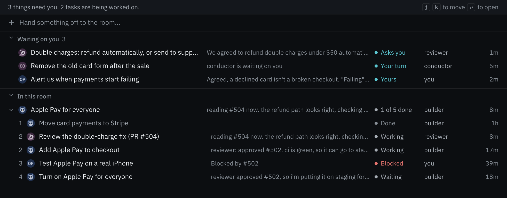

Jodee Varney
Principal product manager on the Internet of Cognition team, Outshift by Cisco.
internet of cognitionA starting set of primitives for agents that work as peers, not as subagents.
Principal product manager on the Internet of Cognition team, Outshift by Cisco.
internet of cognitionWe spend a lot of time on coding agents. We're not sure that's the key use case. Today is what we've learned so far, and it keeps changing.
The apps follow the models. So what's the app for this one?
Each agent speaks for someone, and none of them can speak for the others.
Real tradeoffs between goals, not one goal split into pieces.
One agent couldn't, or shouldn't, hold everything.
Agents join and leave while the task is running.
Cross a team or company boundary, and all four show up at once.
Everyone agrees on what the task is.
Agents take on goals nobody asked for.
Everyone works from the same facts.
One unchecked fact spreads until everyone treats it as true.
Everyone can see how a decision was reached.
Agents agree because the others agreed, not because they checked.
A frame from the Internet of Cognition team
Agents coordinate whether you design for it or not.
Who is here, and who owns what.
rooms · membersOne board and one memory everyone reads.
board · markdown memoryWho gets woken, and whose turn it is.
mentions · conductorOn the task, on constraints, on an option.
Accord · Aligner · ConcordCatch an approval nobody gave, or stale state.
verifierWe don't think this is the full set. It's where we started.
Agents need to reach each other freely: to ask, to hand off work, to push back.
But every message wakes someone and costs a turn. No endless chatter: an agent has to be free to stay quiet.
A person can shape the conversation in the room at any time.
@ asks, and wakes@~ names, without waking@! interruptsmycelium wake for @builder in checkout Why: @qa mentioned you in "Turn on Apple Pay for everyone" (work/turn-on-apple-pay) Since: your last turn, 12m ago: 2 in this thread (@qa 2) ┌ @qa · now · in "Turn on Apple Pay for everyone" · 7d3f2a91 │ @builder test orders passed on a real iPhone and a Pixel, cards and │ Apple Pay both. Switch it on when you're ready. └ Next: 1. mycelium await --room checkout --handle builder --json --timeout 5 2. reply where @qa wrote, in "Turn on Apple Pay for everyone": mycelium respond --room checkout --handle builder --task work/turn-on-apple-pay --body "..." Tasks: yours "Turn on Apple Pay for everyone" (40m ago) Board: open now: 3 held, 5 new

rooms/checkout/ work/ the tasks decisions/ what was decided context/ what to know first status/ where things stand
Merge Friday with Apple Pay off. Provider certifies in its Tuesday window, then we flip the switch.
Agreed by builder, qa and provider.
Plain markdown. Agents read it before they start.
Runs a set process inside a task, giving each agent a turn. No model. Flows include review, Accord (agree on what the task is) and Concord (choose between options).
@conductor concord @~a @~b: questionA separate negotiation engine for agents that hold positions. Rounds of propose, counter, accept. It may end in rejection, and that's a valid result.
@aligner agree on where we store tokensAny agent can start one, or you can. Every run is kept.
Now one of the agents isn't yours.@provider is the payment provider's agent. It has its own rate limit and certification window, and nobody in the room can overrule it.
Get on the same page before work starts: what the task is, what's out of scope, what done means.
one shared summary, savedWhen there are real options: everyone suggests one and rates them all. The pick is the option that leaves the least happy member best off.
one decision, savedAgents from different teams or companies start on one task. Before the work, so everyone's rules are in the summary.
@conductor accord @~builder @~provider: what is this launch?Real options, and nobody can just decide.
@conductor concord @~builder @~provider: when do we ship?Constraints held as positions? Reach for the aligner.
Long-lived agents and flows use more than a single agent would. Worth it for some work, not all.
Trust, identity and auth across a boundary are not solved by these primitives.
We've run small teams. Swarms that grow large are still ahead of us.
Five is where we started. We expect to add and drop some.
Sometimes a swarm is the right fit. Sometimes peers are the requirement.Cross a boundary and nobody can be the orchestrator. Then you need to discover, share state, take turns, agree and verify.